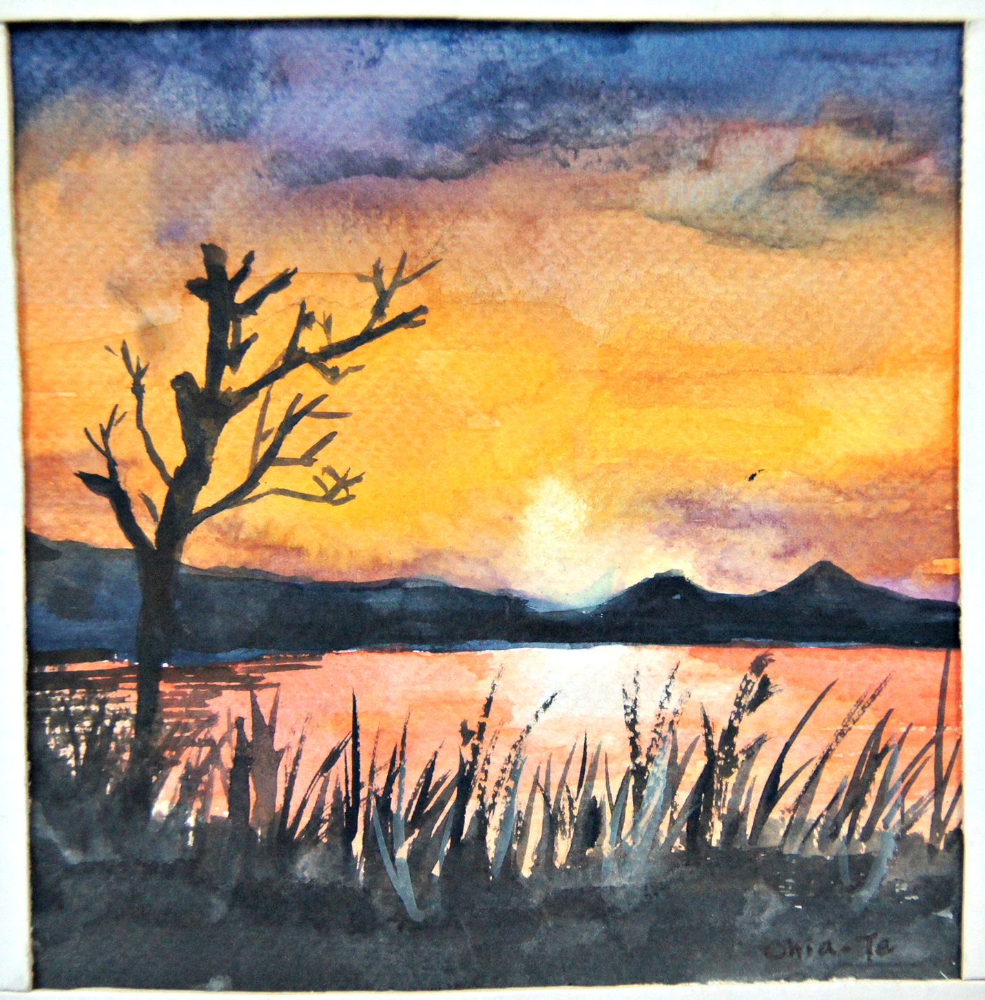
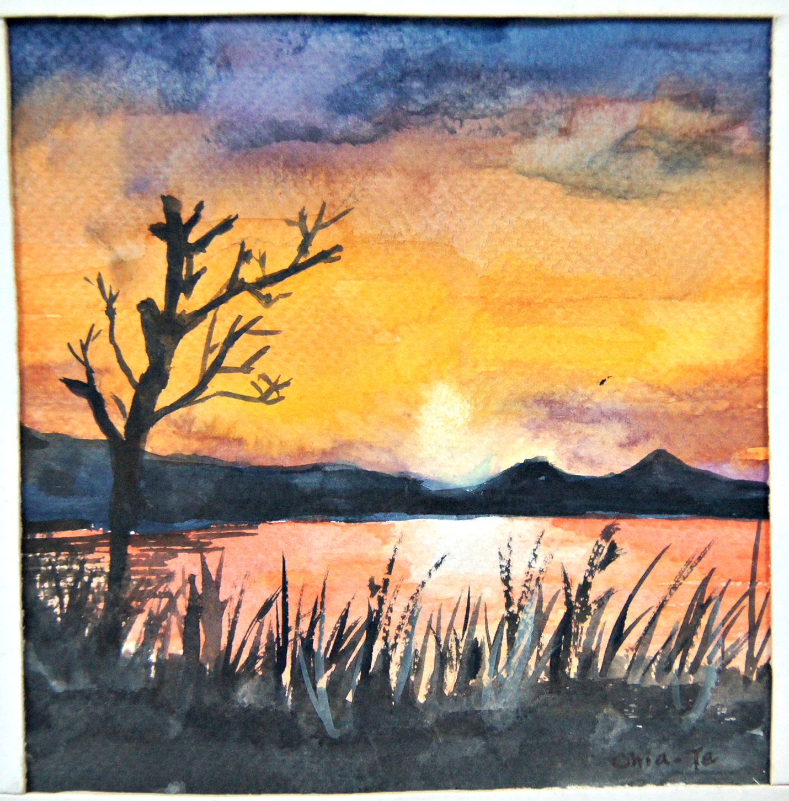

Club Experience
- NCCU Rainbow Art Club 政大采虹美術社
- 活動長(2012)；文書&副社長(2013); 教學長(2014)
- NCCU Tainan Senior High School Alumni Society 政大南友會
- 家族長(2012-2013)
- The Student Association of Dept. Land Economics 政大地政系學會
- 美宣長(2012-2013)
My Art Work
 



Extracurricular Activities
- NCCU Art and Culture Center 政大藝文中心
- 展覽組志工(2011-2012)
- MOCA Taipei 台北當代藝術館
- 政治大學駐校代表(2011-2012)
- 美好校園@政大研究小組計畫(2013-2014)
Speciality
- 鋼琴檢定YAMAHA七級
- 鉛筆素描；水彩繪畫；中國水墨畫；平面設計
- 攝影；基礎修圖；基礎影片剪輯